Седона
Седона – небольшой городок в Аризоне, заслуживающий большего!
Рассмотрим 5 причин, по которым Седона круче, чем Гранд Каньон!
Настоящий городок
Седона не аттракцион для туристов, там течет своя жизнь
Жильё
Рекомендуем пожить в настоящем мотеле, всё как в кино!
Еда
Всегда заказывайте фирменный бургер, Вы не разочаруетесь!
Сувениры
Не только китайского, но и местного производства!
Там есть Мост Дьявола
Да, по нему можно пройти! Если вы осмелитесь, конечно
Небольшая площадь
Все интересные места находятся очень близко
Красивая дорога
Ехать в Седону из Лас‑Вегаса совсем не скучно!
Мало туристов
Большинство едет в Гранд Каньон и толпится там
Заинтересовались?
Укажите требуемые параметры, и мы покажем Вам лучшие предложения отелей в Седоне
Местоположение Седоны
86336, Седона, штат Аризона, США